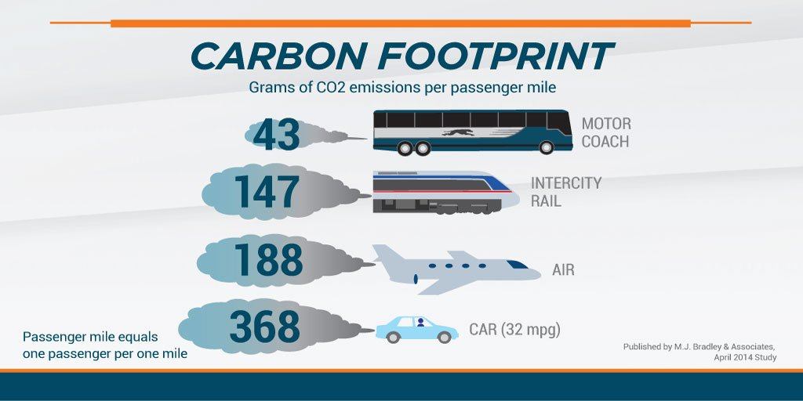
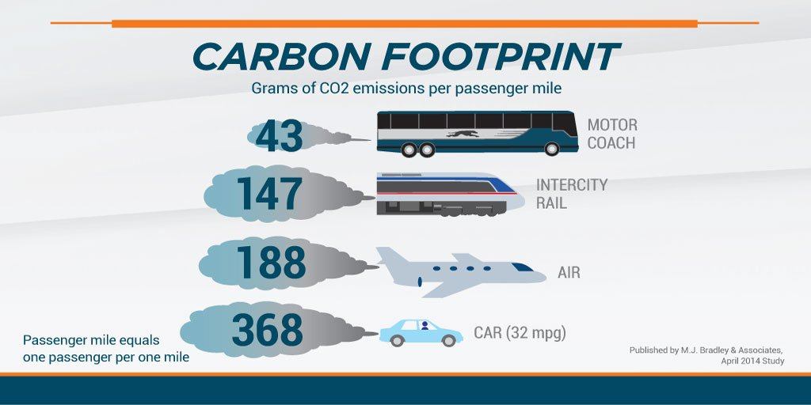

Introduction


In my life, there have been few issues that have impacted the way I do things day-to-day like the impending doom of Climate Disaster. Being born in the mid-80's,
I grew up being taught about the pollution that people produce just by living our lives the way we do, and how that is impacting the world
around us. It can be intimidaing to accept the responsibility of being a good steward of our planet, especially when the fate of generations
hinges on the next few years. There was a point in my life, a little over 20 years ago when I decided that everyone else could do as they pleased,
but I would make the choice to help in my own small way. There are many small (and large) adjustments we can each make in our day-to-day lives
that would have a positive impact on our global future. Here, I describe some 'adjustments' I have made over the years, and some other ideas that
can help reduce your carbon footprint. I believe we can set an example for those around us and influence the culture around waste and consummerism to create the change we wish to see.
"It is difficult to make big changes in life. It's much easier to make smaller "adjustments"."-My mom, Brenda Torrez
A More Harmonious Earthly Existance
Being raised in America, a Land of Plenty, conservation was not always a daily priority in the culture around me. I was lucky to have a mom who taught me how to properly sort recyclables,
combine errands in a way to minimize our family's driving around town, plant vegetables, and use the very last of the toothpaste in the tube before throwing it away. As I grew into my early
teens, conservation was emphasized more and more. It wasn't just about recycling. Through local environmental groups I learned the importance of reducing and reusing what was typically considered
waste. I became aware of the ways in which my spending helped to shape the way industries produced foods and other goods, and the devastating affects of plastics and their production on our
living planet. Yes, I am a millenial hippie. I've come to embrace it. I have gathered small habits along the way, like a three-toed sloth growing algae over the years, one day, it is my hope to
be completely green.
Here are a few solid habits I've incorporated into my daily lifestyle:
- Going vegitarian
- Driving a small car
- Using reusable bags for everything
- Being a conscientious consumer with regards to product packaging as well as food/ingredient sources
- Participating in recycling and upcycling programs
- Buying secondhand or reconstructed clothing
- Contributing to my utility's green energy initiative and being frugal with energy use in my home
- Cooking often for myself and my family and eating the leftovers
- Gardening! And composting
- Not having any more biological children
This is not an exhaustive list, by any means. But you can see how small tweaks in several areas can start to add up to a greener lifestyle. And there's always more progress to be made! We can all
find areas in our lives to make such small adjustments. Here are just a few ideas and links to more information.
Calculate Your Carbon Footprint 📉
The first step toward making any adjustments in a positive direction is knowing where you begin! Take a look at a carbon footprint calculator,
like this one,to see where you start!
🍔 Diet Matters 🍓


Reduce or Eliminate Your Meat and Dairy Consumption
It may be hard to switch to a vegitarian or vegan diet, but simply reducing the amount of meat, eggs and dairy you consume (especially red meats such as beef and lamb), you can significantly reduce your "foodprint".
Choose Locally Grown and Otganic Produce Where Available
While the carbon impact of organic farming has not been proven to be less than traditional farming methods, it is more likely that organic farmers are using more environmentally sustainable methods that will have a larger imapc as time goes on.
Locally grown produce does not need to travel as far to reach you, thus cutting down on carbon produced by transporting the goods.
Be Thoughtful About Ingredients Contained in the Foods You Buy
Foods such as coffee, cocoa, palm oil and others are often farmed in areas that used to be forests. This is especially true for the Amazon Rainforest which has been experiencing
massive deforestation to make room for farmers to plant crops. By checking the ingredient labels on the products you buy, you can send your consumer dollars toward companies who take more responsibility for the sources of their ingredients.
Opt to Cook at Home More Often
Dining out, especially on fast food, produces more waste and requires more production and transportation of goods than simply cooking a meal in your own kitchen. I'm not saying don't support local businesses,
just maybe don't eat out every night.
Reduce Your Food Waste
Learn new recipes that incorporate leftovers. Be mindful of portion size and adjust if you find yourself throwing away extra food often. Plan your shopping list by meals you plan on making at home so you only buy what you'll use.
Incorporate composting to put your food scraps to good use. And my personal favorite, adopt the mom diet; don't fix yourself a plate, just eat your kid's leftovers and a buch of ice cream after they go to bed.
links to red wrigglers composter, easy at home dinner recipes, rainforest alliance link)
♳ Recycling, Reusing, and Upcycling ♹


Recycling in Your Neighborhood
Some areas offer their residents curbside recycling. Others do not. If it is offered in your neighborhood, please take advantage! There is nothing easier than throwing your
old newspapers and (rinsed out) milk jugs in the blue bin. If your neighborhood does not offer curbside recycling, you can always look up your local recycling center and take
your sorted recylables to drop off. Not as easy, but worth the effort.
Reducing the Amount of Waste You Produce
This can include using reusable shopping, produce and sandwich bags, or choosing the product that uses less packaging, or is sourced from recycled materials.
Investing in a water pitcher that purifies your tap water can not only reduce waste from plastic bottles, but will save you money in the long term. You could also repurpose packaging materials for use around your house.
(I use small boxes as junk drawer organizers.) This leads into our next sugestion...
Upcycle!
This is one of my favorites because it not only takes trash out of the waste stream, but it gives people a new avenue to be creative with collected materials. Companies such as Terracycle and Hipcycle collect materials that would otherwise end up in a dump, and give them new life. You can also find many people
who have skills with a sewing machine and can create new items from clothes that would otherwise be tossed.
Repurposing
Along the same vein as upcycling, comes repurposing. This creative and environmentally friendly activity fits nicely into the trendy home decor theme of "rustic farmhouse". Instead of tossing out a broken
kitchen chair, you can turn it into an outside plant stand with character! The objective is to find a new way to use an old thing that may have outlived its initial purpose, maximizing the use derived from the thing before it
needs to be scrapped. A great place to start researching any ideas for projects is Pintrest.
💸 Let's Go Shopping! 👗


Reusable Bags
These are everywhere! These will effectively replace all those plastic bags you bring home from the grocery and retail stores and seriously cut down on plastic production and waste. You can find reusable shopping
bags for retail and grocery, including mesh produce bags, online or at your favorite store. And for that stockpile of plastic bags hoarded under your kitchen sink, there are now plastic bag drop off bins at most grocery stores so they can be reused and recycled!Do the Research!
Become an informed consumer! Apps like Buycott make it easy to scan labels as you shop to see if the prroduuct you're looking at supports your cause(s).
Adopt a Minimalist Wardrobe, Shop Secondhand and Reconstruct or Upcycle Old Clothes
Invest in quality clothing that can be worn with much of what you already own. "Fast fashion" creates a lot of waste in production and materials, just to be thrown out come next season.
If you need to update your wardrobe, consider shopping secondhand or creating new pieces from the old. If you're not handy with a sewing machine, you can find plenty of people who are online.
⛽ Travelling ⛟


 

Opt to Drive a Smaller Car (Or Save Up for the Fancy Electric One)
Smaller vehicles use less gas. Electric ones use none, especially if they are charged using renewable energy.
Use Alternate Modes of Transportation
Public transportation, walking or riding a bike are all great ways to get where you need to go without all the carbon emissions(in the case of public transportation, significantly less emissions).
Fly Less
There is a lot of competing science on the fuel eficiency of air travel vs. driving. The general consensus is that air travel creates more greenhouse gases than a car with 3 or more people driving the same distance. There is also the consideration of 'binge flying',
which is becoming more commonplace with the growing middle class affluence. So maybe just drive the fam on your next vacation?
🏡 Around the House 📫

- participate in any 'green' initiatives your utility provider offers. ex: Ameren's wind power
- turn your a/c up a couple degrees and use fans to help keep cool
- stop cutting your lawn/mow less frequently. the benefit is twofold: you reduce emissions from the lawnmower and provide a more robust carbon sink on your property
- plant a garden. whether fruits and veggies, native plants, or both. bonus: then you can use the compost you've created from your kitchen scraps!
- reduce energy consumption by: line drying your clothes when possible, washing clothes on a colder water setting, don't use the heated dry cycle on your dishwasher, switch to LED lightbulbs, turn off lights when not in use, do not leave electronics plugged in
- investing in solar panels to power your home
- shop home decor items from fair trade, environmentally sustainalbe/responsible sources. links to some options